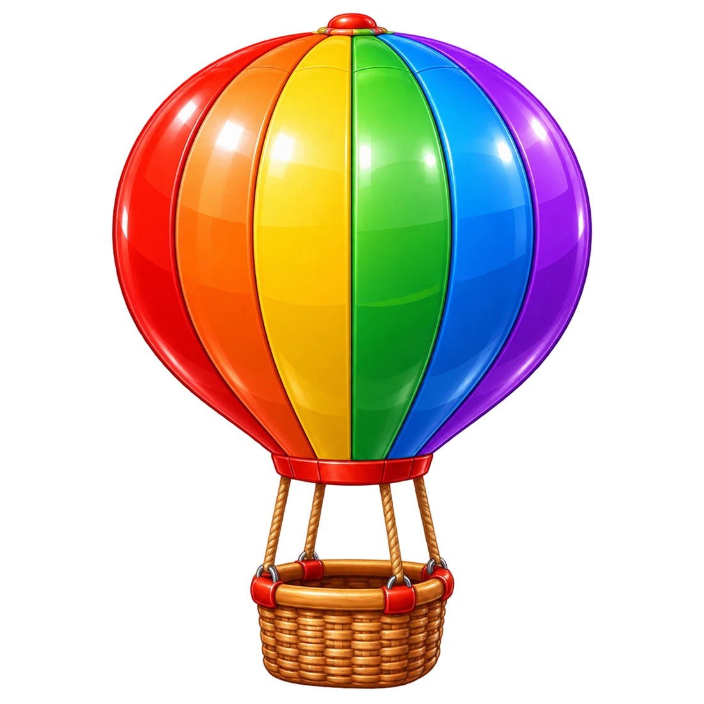
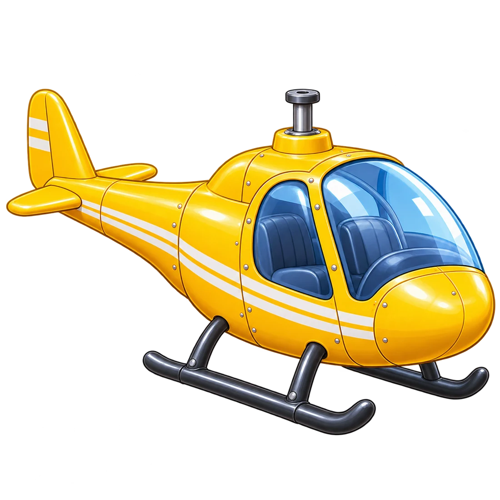
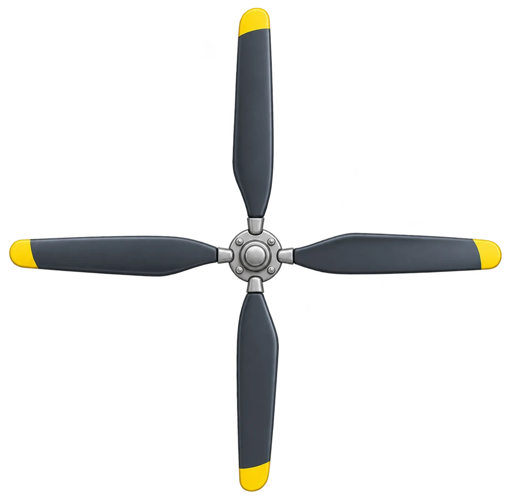
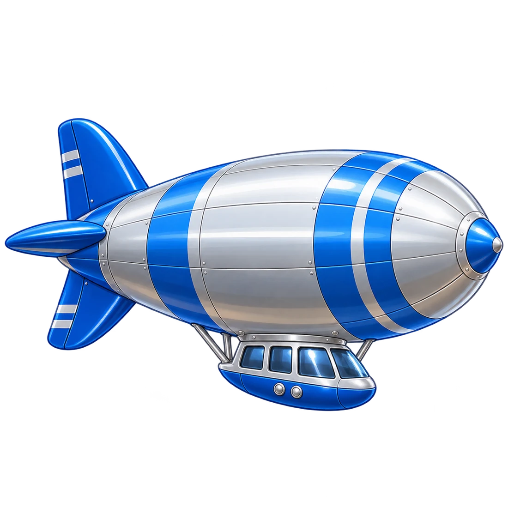

Маленькі відкриття
Літальні апарати
← Транспорт

Ходімо зі мною в небо!
П’ять апаратів — п’ять особливих подорожей
▶ Дивитися всю історію
Або обери свою подорож
Повітряна куля
Над річкою й пагорбами


Гвинтокрил
Злітаємо й зависаємо
Гвинтовий літак
Між пухнастими хмаринками

Дирижабль
Тиха подорож із журавлями
Пасажирський літак
Під зоряним небом
Маленькі відкриття
Ходімо в небо!
← Апарати
Ⅱ Пауза
↻ Ще раз
🔊
Далі →
▶ Продовжити зі звуком